automated drilling machines revision 2809
thumb|right|[[https://www.indiegogo.com/projects/beamcnc-construction-system-cnc-mill#/|BeamCNC crowdfunding campaign demonstration device]]
thumb|right|[[https://wiki.replimat.org/wiki/Eiffel|RepRap Eiffel, showcasing the characteristic frames ]]
Challenges
Frames can be manufactured by hand, with careful measurement and drilling. While meditative, this work is repetitive and laborious. Time studies of the hand production process using a drill press reveal that positioning the undrilled frame stock for precise drilling consumes the majority of effort. Automating the process in an affordable manner will reduce cost, increase availability, and free time for creative effort.
Approaches
Drill guide
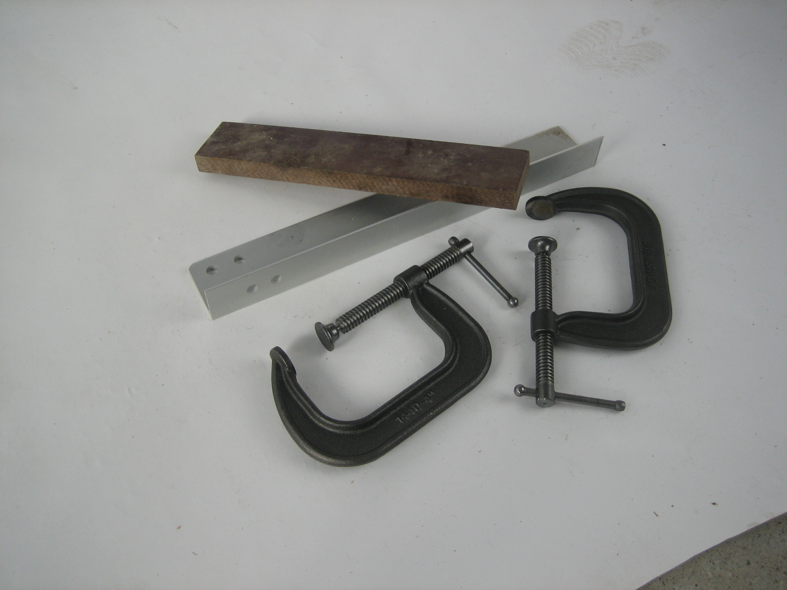
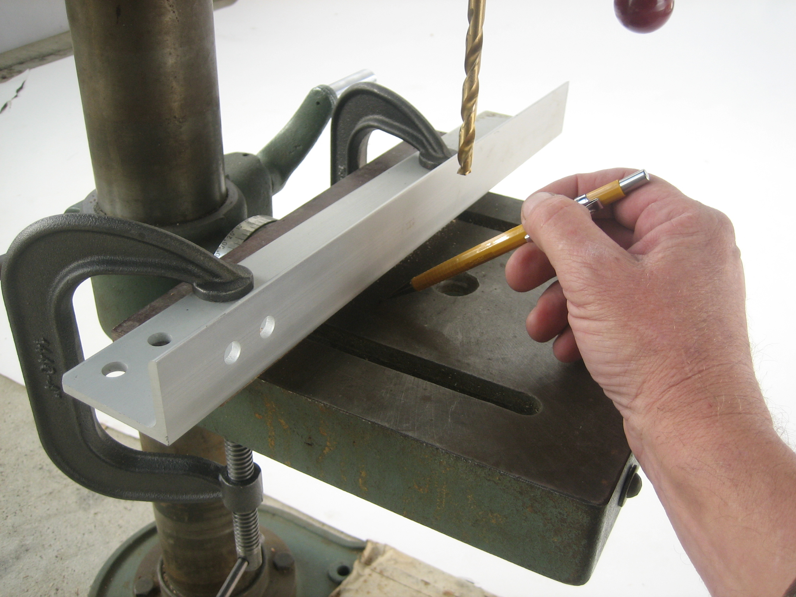
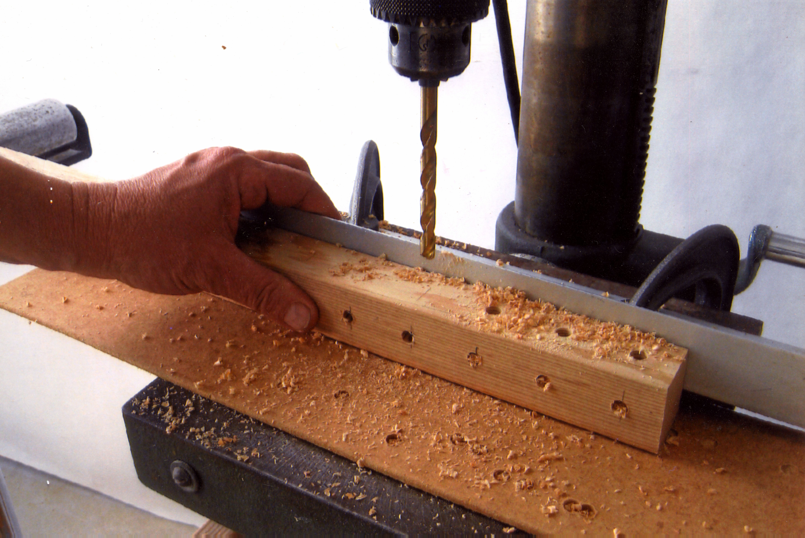
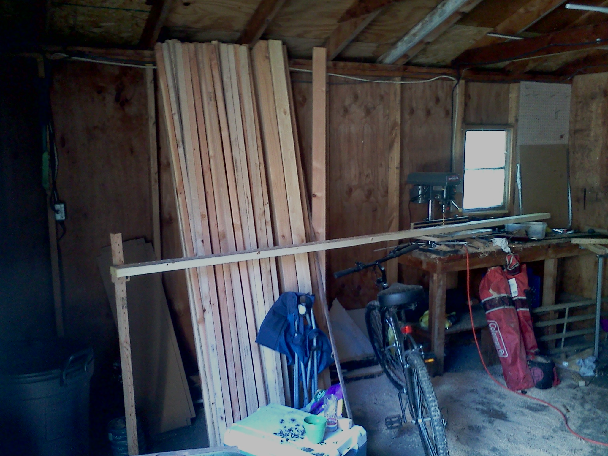
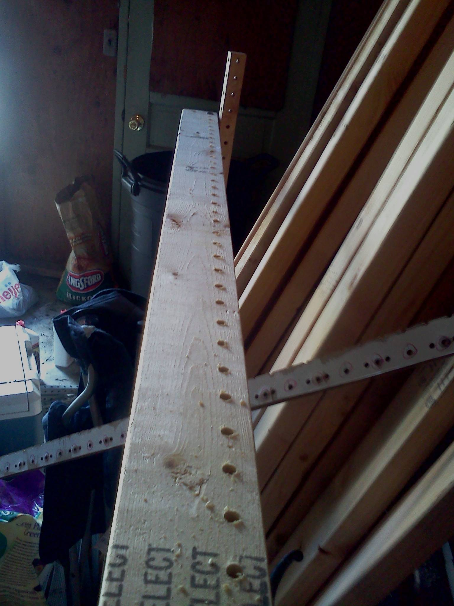
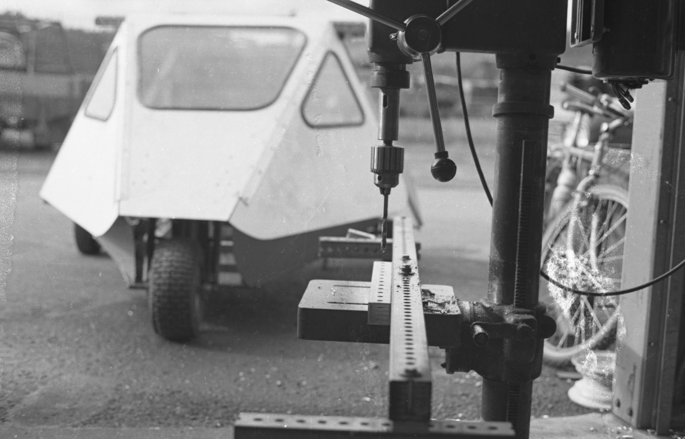
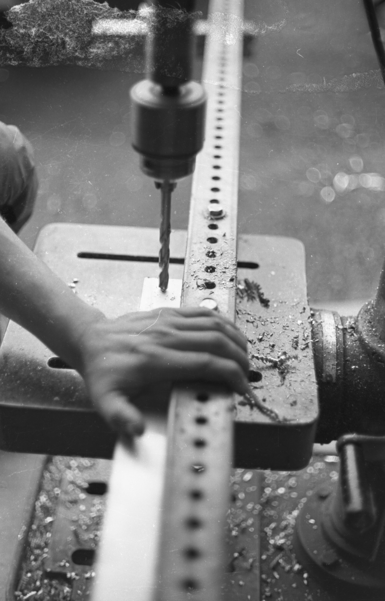
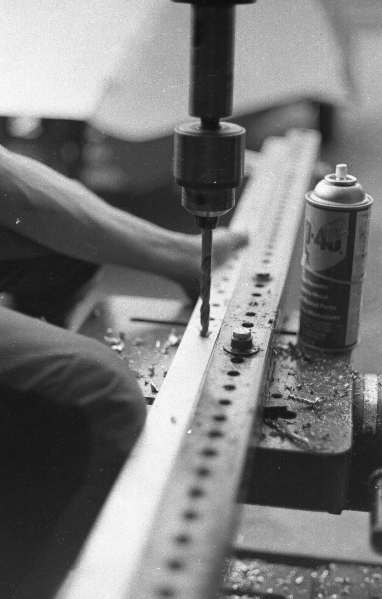
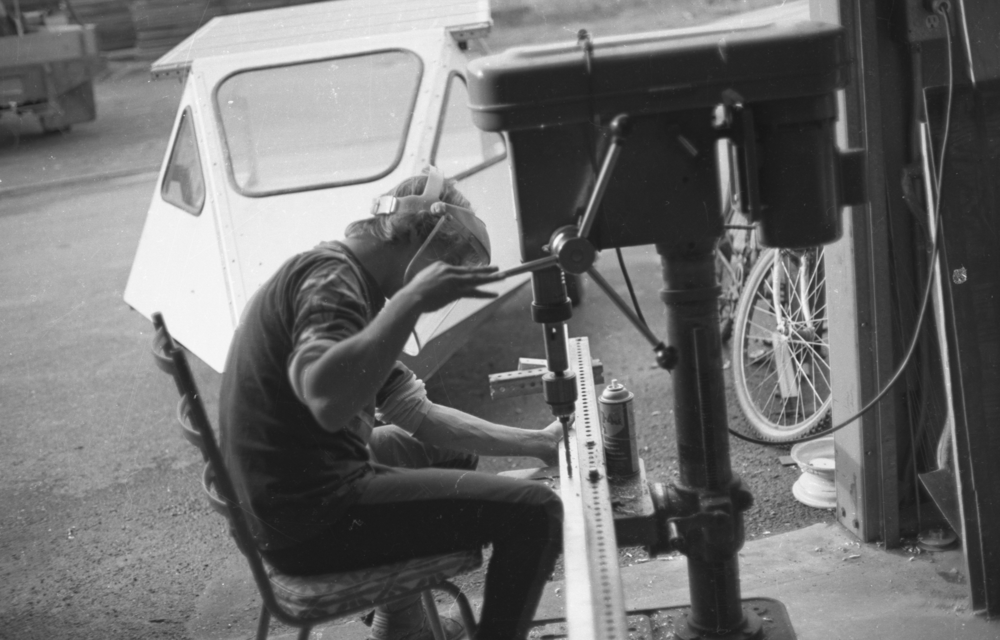
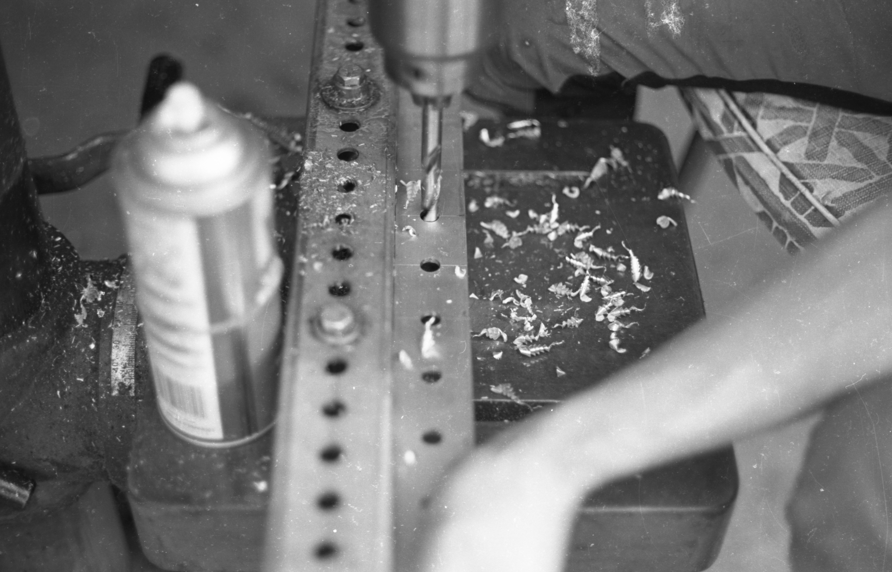
Gang drill
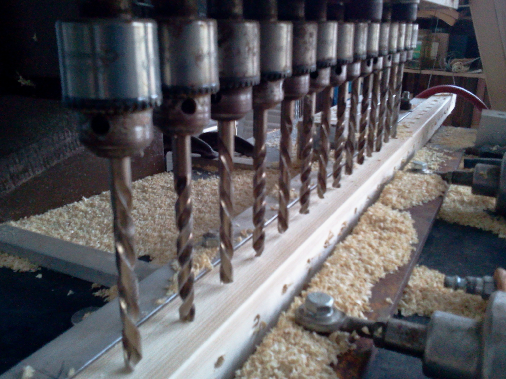
Dual gripper frame drill
Challenges
Reducing cost and improving availability of replimat frames requires decentralized manufacturing.
Approaches
A frame drill built from standardized and widely available industrial automation components allows anyone to source the parts they need anywhere to build more frame drills.
This frame drill design makes use of two independently controlled and actuated industrial grippers to move and hold square stock for drilling on all four sides by independently actuated high speed spindles.
Parts
- 2x MHZ2-40D grippers
- 6x HPV6 Linear module ballscrew SFU1204 with Linear Guides HGH15 HIWIN 100% same size with NEMA23 2.8A 56mm stepper motor alt: Befenybay 100mm linear axes
- 4x Genmitsu GS-775M Spindle motor
- 2x or 4x TN10X50 Industrial air cylinders
- 5 Way, 2 Position pneumatic solenoid valve
- 4x 5mm CNC Spindle Motor ER16 Type A Extension Rod Collect Chuck
- 12x 6mm push fit pneumatic fittings
Flat pack frame drill
The frame drill automatically drills regularly spaced holes in square raw material to produce reusable Replimat frames. It is constructed of a number of custom plates, motors, a controller, and several 3D printed parts.
Tools
Parts
{| class="wikitable"
|-
! Part !! Quantity !! Supplier
|-
| plate-drill-machine || 2 || [[https://github.com/timschmidt/replimat/blob/master/src/OpenSCAD/plate-drill-robot.scad|OpenSCAD File]]
|-
| plate-drill-machine-spindle || 1 || [[https://github.com/timschmidt/replimat/blob/master/src/OpenSCAD/plate-drill-robot-spindle.scad|OpenSCAD File]]
|-
| NEMA-17 stepper motor || 3 || Link
|-
| roller-raw-material || 12 || CAD File
|-
| Spindle || 1 || [[https://www.ebay.com/itm/ER16-500W-High-Speed-DC-48V-Air-Cooling-Brushless-Spindle-Motor-Driver-Clamp/312656264518?hash=item48cbc3fd46:g:YDkAAOSwQjxdCuK~|ER16 500W High Speed DC 48V Air Cooling Brushless Spindle Motor + Driver]]
|-
| LM8UU Bearing || 1 - pack of 2 || [[https://www.amazon.com/gp/product/B07RL72L65/ref=ppx_yo_dt_b_asin_title_o00_s00?ie=UTF8&psc=1&tag=replimat-20|Amazon]]
|-
| Drive belt || ||
|-
| Drive pulley || ||
|-
| Controller || ||
|-
| Neoprene foam w/ adhesive backing || || [[https://www.amazon.com/gp/product/B06ZZDJ19L/ref=ppx_yo_dt_b_asin_title_o02_s01?ie=UTF8&psc=1&tag=replimat-20|Amazon]]
|-
| Drill bit || ||
|-
| Rail Guide Support for 16mm Diameter Shaft || 1 - pack of 4 || [[https://www.amazon.com/gp/product/B07QNY3831/ref=ppx_yo_dt_b_asin_title_o01_s00?ie=UTF8&psc=1&tag=replimat-20|Amazon]]
|-
| Rail Guide Support for 8mm Diameter Shaft || 1 - pack of 4 || [[https://www.amazon.com/gp/product/B07QS7LLF6/ref=ppx_yo_dt_b_asin_title_o02_s00?ie=UTF8&psc=1&tag=replimat-20|Amazon]]
|-
| 350mm 8mm T8 Lead Screw Set Lead Screw+ Copper Nut + Coupler + Pillow Bearing Block || 2 || [[https://www.amazon.com/gp/product/B01H1S13SQ/ref=ppx_yo_dt_b_asin_title_o02_s01?ie=UTF8&psc=1&tag=replimat-20|Amazon]]
|-
| Oilite drill bushing || 2 || [[https://www.mcmaster.com/6338K463|Mcmaster]]
|}

{kind=link}
{kind=link}